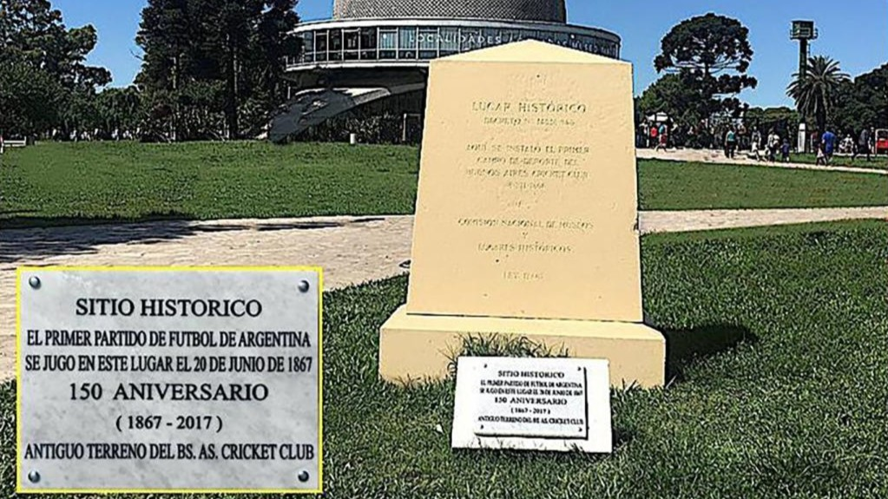

Inicio
Clubes
Institucional
Estadísticas
Contacto
INSTITUCIONAL
Cómo llegó el fútbol a la Argentina y cómo se formaron las distintas asociaciones que rigen la actividad

Inicios (1867-1993)
El deporte llegó al país hacia finales del siglo XIX
Amateurismo (1893-1931)
En 1893 se fundó la Asociación Argentina de Football
Profesionalismo (1931-Actualidad)
El quiebre se dio luego de la famosa "Revolución del 31"